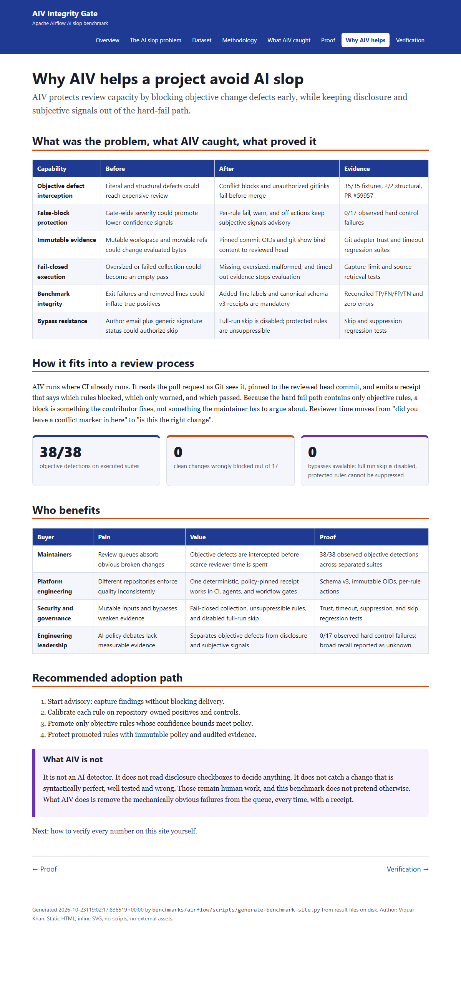

Why AIV helps a project avoid AI slop
AIV protects review capacity by blocking objective change defects early, while keeping disclosure and subjective signals out of the hard-fail path.
What was the problem, what AIV caught, what proved it
| Capability | Before | After | Evidence |
|---|---|---|---|
| Objective defect interception | Literal and structural defects could reach expensive review | Conflict blocks and unauthorized gitlinks fail before merge | 35/35 fixtures, 2/2 structural, PR #59957 |
| False-block protection | Gate-wide severity could promote lower-confidence signals | Per-rule fail, warn, and off actions keep subjective signals advisory | 0/17 observed hard control failures |
| Immutable evidence | Mutable workspace and movable refs could change evaluated bytes | Pinned commit OIDs and git show bind content to reviewed head | Git adapter trust and timeout regression suites |
| Fail-closed execution | Oversized or failed collection could become an empty pass | Missing, oversized, malformed, and timed-out evidence stops evaluation | Capture-limit and source-retrieval tests |
| Benchmark integrity | Exit failures and removed lines could inflate true positives | Added-line labels and canonical schema v3 receipts are mandatory | Reconciled TP/FN/FP/TN and zero errors |
| Bypass resistance | Author email plus generic signature status could authorize skip | Full-run skip is disabled; protected rules are unsuppressible | Skip and suppression regression tests |
How it fits into a review process
AIV runs where CI already runs. It reads the pull request as Git sees it, pinned to the reviewed head commit, and emits a receipt that says which rules blocked, which only warned, and which passed. Because the hard fail path contains only objective rules, a block is something the contributor fixes, not something the maintainer has to argue about. Reviewer time moves from "did you leave a conflict marker in here" to "is this the right change".
Who benefits
| Buyer | Pain | Value | Proof |
|---|---|---|---|
| Maintainers | Review queues absorb obvious broken changes | Objective defects are intercepted before scarce reviewer time is spent | 38/38 observed objective detections across separated suites |
| Platform engineering | Different repositories enforce quality inconsistently | One deterministic, policy-pinned receipt works in CI, agents, and workflow gates | Schema v3, immutable OIDs, per-rule actions |
| Security and governance | Mutable inputs and bypasses weaken evidence | Fail-closed collection, unsuppressible rules, and disabled full-run skip | Trust, timeout, suppression, and skip regression tests |
| Engineering leadership | AI policy debates lack measurable evidence | Separates objective defects from disclosure and subjective signals | 0/17 observed hard control failures; broad recall reported as unknown |
Recommended adoption path
- Start advisory: capture findings without blocking delivery.
- Calibrate each rule on repository-owned positives and controls.
- Promote only objective rules whose confidence bounds meet policy.
- Protect promoted rules with immutable policy and audited evidence.
What AIV is not
It is not an AI detector. It does not read disclosure checkboxes to decide anything. It does not catch a change that is syntactically perfect, well tested and wrong. Those remain human work, and this benchmark does not pretend otherwise. What AIV does is remove the mechanically obvious failures from the queue, every time, with a receipt.